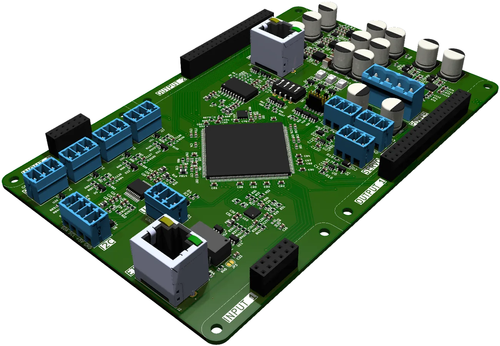

Novinka · Axion CAD od LMD Technologies
AI konstruktér
AI konstruktér
přímo v SOLIDWORKS.
Méně předělávek, méně dotazů z dílny. Axion hlídá výkresy, normy, vyrobitelnost i cenu dřív, než díl odejde do výroby.
☰LMD
AxionAI asistent konstruktéra · LMD Technologies
Design ▾Analyze ▾Vy
Vytvoř díl podle přiloženého obrázku[📎 výkres]
Pracuji…0.0 s
Axion
📎 Screenshot 2026-10-06 073948.png ✕Napište úkol nebo příkaz…Gemini
→
Kontrola výkresů a norem
Vyrobitelnost a cena
Napojení na PDM, ERP a MES
Většina funkcí běží lokálně
Čemu se věnujeme
Od návrhu po výrobní linku.
Axion vznikl z naší každodenní práce. Navrhujeme stroje a výrobní linky, spravujeme PDM a rozumíme tepelnému zpracování 3D tištěných hliníkových slitin.
Spolupráce s CircuitNinja
DPS prototyp na stole do 24 hodin.
S CircuitNinja vyvíjíme zařízení pro ultrarychlou výrobu DPS prototypů. Držitelé ceny Průmysl 4.0 – 2026.
Více o spolupráci →
0–1 hKontrola datGerber, automatická kontrola návrhu
1–22 hVýrobaAutomatizovaná linka, 2–12 vrstev
22–23 hKontrola kvalityOptická inspekce
23–24 hExpediceDoručení v rámci ČR
Reference
Vybrané projekty.
Od výrobních linek přes zařízení pro výzkum po materiály. Detail každého projektu najdete na stránce oblasti.

AutomatizaceSvarog BuildingsLinka, která ze slámy dělá stavební bloky.
KonstrukceSanvioDvířka do vany pro seniory a osoby s omezenou pohyblivostí.
KonstrukceBayaya MúzaVýsuvný systém pro postel, která se vysune ven pod hvězdy.
KonstrukceFyziologický ústav AV ČRBiaxiální trhačka pro výzkum degradace tkání u pacientů s diabetem.

VýzkumCERNKonstrukce pro projekty v jaderném výzkumu, od skici po montáž.
Materiály3D tisk Al slitinTepelné zpracování dílů z kovového 3D tisku.
Spolupracovali jsme s
CERNAV ČRŠkoda AutoBayayaSanvioCircuitNinja